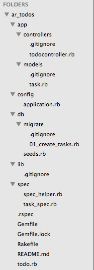

Todo List
My first exposure to the todo list challenge was during the time we at DBC had to practice ARGV in ruby(which was also the first time we learned how to use parameters on the console). But that was before we learned databases and Active Record. This is walkthrough on the workflow of solving todo using Active Record. We will be using the following folders:(Look at my previous post for more info on each folder) 
Workflow
In our file, we will need something that can link our ruby files to our database. This is Active Record. The actual connection itself for this project is stored in our config folder, under application.rb The most important line in this file is found on line 26. This establishes the connection between ActiveRecord and the database. (Active record is an ORM bundled into a gem)
Step 0: Create source file
When I say source file, I mean the file that you will run to make your entire application run. This should be found within the source directory of your project. In our case, it is called todo.rb All This file should do is run a command in our master controller(line 4). To do that, it needs access to the controller.(line 1)
Step 1: MVP and design schema
So I cheated. This is actually 2 steps bundled into 1. You need to design your database table schema based upon what you think you will need. But don't make it too complex, you should follow the MVP(minimum viable product.) You can always make more migrations to add columns to a table and join tables together.
Step 2:Make the migration file.
The migration file is how you will implement your table and schema into your database. It will require access to the database itself via Active Record.